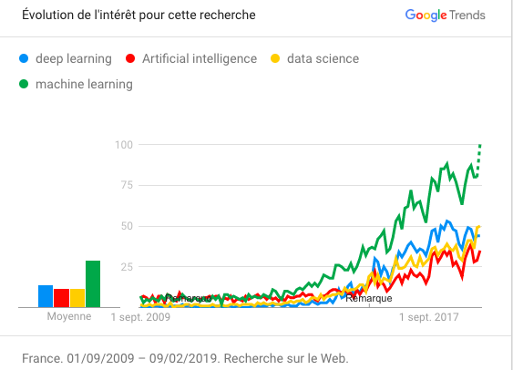

L'intelligence artificielle (IA) est un domaine de l'informatique qui se concentre sur la création de machines intelligentes capables de réaliser des tâches qui nécessitent normalement l'intelligence humaine, comme la reconnaissance de la parole, la compréhension du langage naturel, la vision, la résolution de problèmes et la prise de décision. L'objectif ultime de l'IA est de développer des systèmes capables de penser, d'apprendre et de s'adapter comme les êtres humains.
L'histoire de l'IA remonte aux années 1950, lorsque les premiers ordinateurs ont été développés. Les scientifiques et les ingénieurs ont commencé à travailler sur des programmes informatiques qui pouvaient imiter la pensée humaine, mais les progrès étaient lents en raison de la complexité du cerveau humain et des limites technologiques de l'époque. Au fil des décennies, l'IA a connu des avancées significatives, notamment grâce à l'apprentissage automatique (machine learning) qui permet aux ordinateurs de s'adapter et d'améliorer leurs performances en analysant des données. Cette technologie est aujourd'hui largement utilisée dans des domaines tels que la reconnaissance vocale, la recommandation de produits en ligne et la détection de fraude financière.
Aujourd'hui, l'IA est largement utilisée dans de nombreux domaines, de la médecine à l'automobile, en passant par la finance et les services publics. Cependant, l'IA soulève également des préoccupations éthiques, notamment en ce qui concerne la sécurité, la vie privée et la transparence. Pour cette raison, de nombreux gouvernements et organismes de réglementation travaillent pour établir des normes et des réglementations pour guider l'utilisation de l'IA. Dans les années à venir, l'IA devrait continuer à évoluer et à avoir un impact important sur notre société. Les développements actuels dans des domaines tels que la robotique, l'Internet des objets et la réalité virtuelle ouvrent de nouvelles possibilités pour l'utilisation de l'IA.
